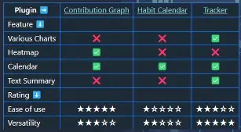

Description
Thanks for watching, and I hope you enjoyed these top 3 Obsidian habit trackers and how to set them up easily.
⬇️ DOWNLOADS Lean Habits vault: https://kspr.me/lhb FREE Obsidian templates and vault: https://shop.sascha-kasper.com/collection/obsidian
🔗 MENTIONED LINKS Documentation: https://wiki.sascha-kasper.com/obsidian/lean-vaults/lean-habits/leanproductivity-habits-vault/ Contribution Graph: https://github.com/vran-dev/obsidian-contribution-graph Habit Calendar: https://github.com/hedonihilist/obsidian-habit-calendar Obsidian Tracker: https://github.com/pyrochlore/obsidian-tracker
🌐 FIND ME ONLINE Discord: https://discord.gg/sbMg6PP2vq X: https://twitter.com/skasper LinkedIn: https://www.linkedin.com/in/saschakasper BlueSky: https://bsky.app/profile/skasper.bsky.social Threads: https://www.threads.net/@_leanproductivity Blog: https://sascha-kasper.com Facebook: https://www.facebook.com/profile.php?id=100085552656532 Instagram: https://instagram.com/_leanproductivity
💶 LIVELIHOOD ☕ I know you cannot support all the creators you might want to. Maybe next time you can, you want to pick me and leave some “Super Thanks”. I appreciate your help.
👍 THANK YOU I hope you found this useful. Thanks for watching.
My Notes

00:00 What’s happening
00:11 What you get
00:58 Setting the stage
- With each of these plugins we would like:
- Store and edit the data in each daily note as frontmatter properties.
- Data that we are tracking in this tutorial:
- whether a challenge (habit) was completed (true/false)
- How many repetitions were done (e.g. pushups)
- Sleep quality (text - red/yellow/green)
- Body measurements (inline fields)
- Weight(numeric)
- BMI(numeric)
- Fat%(numeric)
- 03:00: Visualization options: chart, calendar, heatmap, text summary
- 03:13: His folder structure
- 04:04: Prerequisites: required plugins
- Calendar
- I wonder if I can use Journals Plugin instead.
- Dataview
- Multi-Column Markdown
- Instead of using multi-column syntax (which may break in the future), I’d rather try using native Obsidian Canvas using the approach taught here.
- Periodic Notes
- I wonder if I can use Journals Plugin instead.
- Templater plugin
- The tracker plugins that we’ll be reviewing in this tutorial:
- Habit Calendar
- Tracker plugin
- Contribution Graph
- Calendar
04:31 = CONTRIBUTION GRAPH =
- Similar feature range as the currently defunct heatmap plugin.
- 05:54: Data sources
- Page:
- This pulls every daily note (page) from a given folder path.
- All Task
- Task in Specific Page
- Page:
04:52 Month Track View
09:27 Git Style Heatmap View
09:49 Calendar View
10:34 Heatmap - Month Track
11:27 Heatmap - Calendar
11:59 Pros
- 08:37: Instead of having to edit the code of your graphs, you can click a button to edit it with a GUI.
12:24 Cons
- Data sources are limited to folders and tags.
- It would be great to have an option to use queries.
12:34 Best for
- visualizing consistency as well as intensity.
12:39 Rating
13:00 = HABIT CALENDAR =
This plugin is intended to be used with DataviewJS plugin.
15:14 Pros
- You can track multiple habit types and see them side by side in the same chart.
- highly flexible querying
15:33 Cons
- I am not a fan of using DataviewJS. IMO it leads to tool fiddling.
- steep learning querve writing dataviewJS queries
15:44 Best for
Great for getting a comprehensive view over your habits.
15:53 Rating
16:12 = TRACKER =
- Data sources: tags, frontmatter, text, wiki links, dataview fields, tables, file metadata, and tasks
- Summary syntax: 17:36:
16:27 Calendar with Colors
17:55 Calendar with Emojis
19:02 Bar Chart
19:56 Bullet Chart
21:20 Line Chart
22:49 Pros
- Supports even more chart types
23:04 Cons
- DOES NOT SUPPORT HEAT MAPS.
- Does not seem to have a GUI editor built in.
- Large learning curve